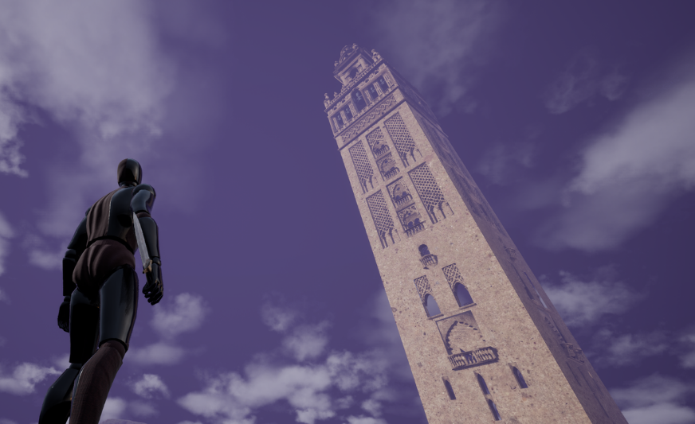
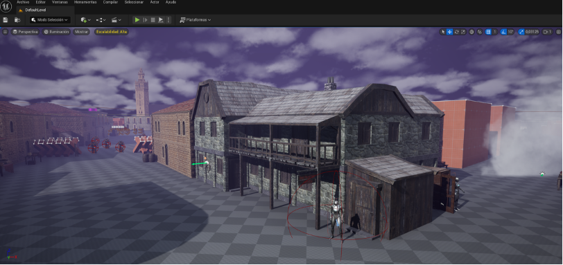
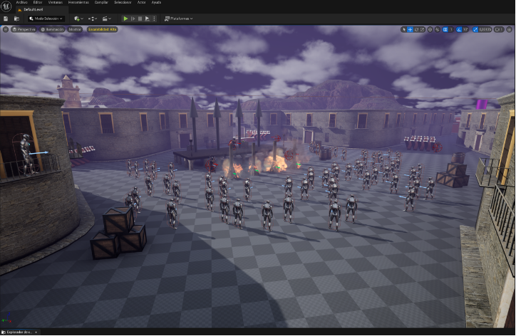
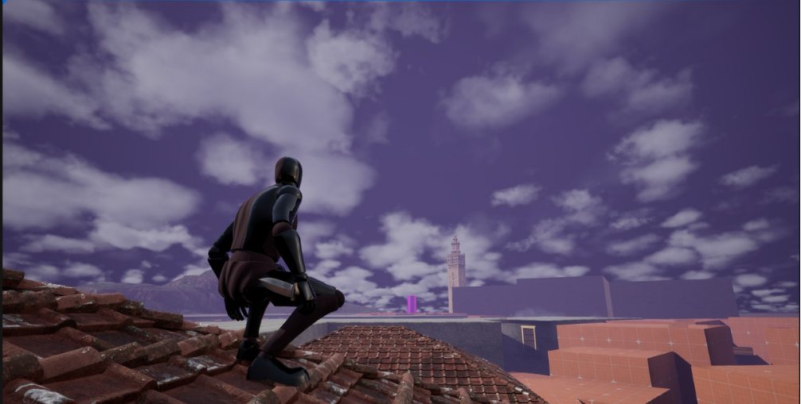
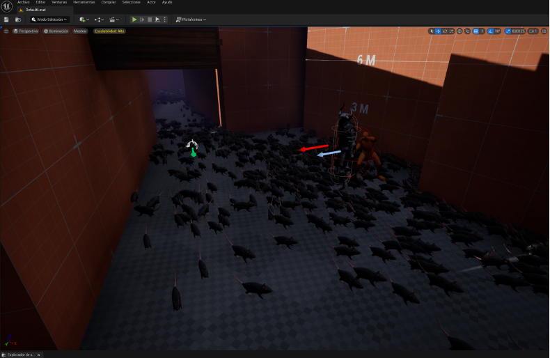

El Concepto
Plague of the Inquisition es un videojuego de aventura y sigilo ambientado en la Sevilla del siglo XVI, durante los oscuros tiempos de la peste negra y la persecución inquisitorial. La historia sigue a Ilana, descendiente de un linaje de médicos, quien tras sobrevivir a la Inquisición en su infancia, busca venganza mientras descubre un legado que cambiará la historia.
Mi Rol y Retos
Trabajando en un equipo de tres personas, mi rol se centró en el diseño de niveles (blockout) en Unreal Engine 5 y la creación de un entorno histórico inmersivo. El mayor reto fue integrar mecánicas de sigilo con herramientas de la época (como dagas, pociones y granadas de humo), equilibrando la narrativa visual con el rendimiento del motor gráfico.
Galería de Imágenes
Haz clic en las imágenes para ampliarlas:



